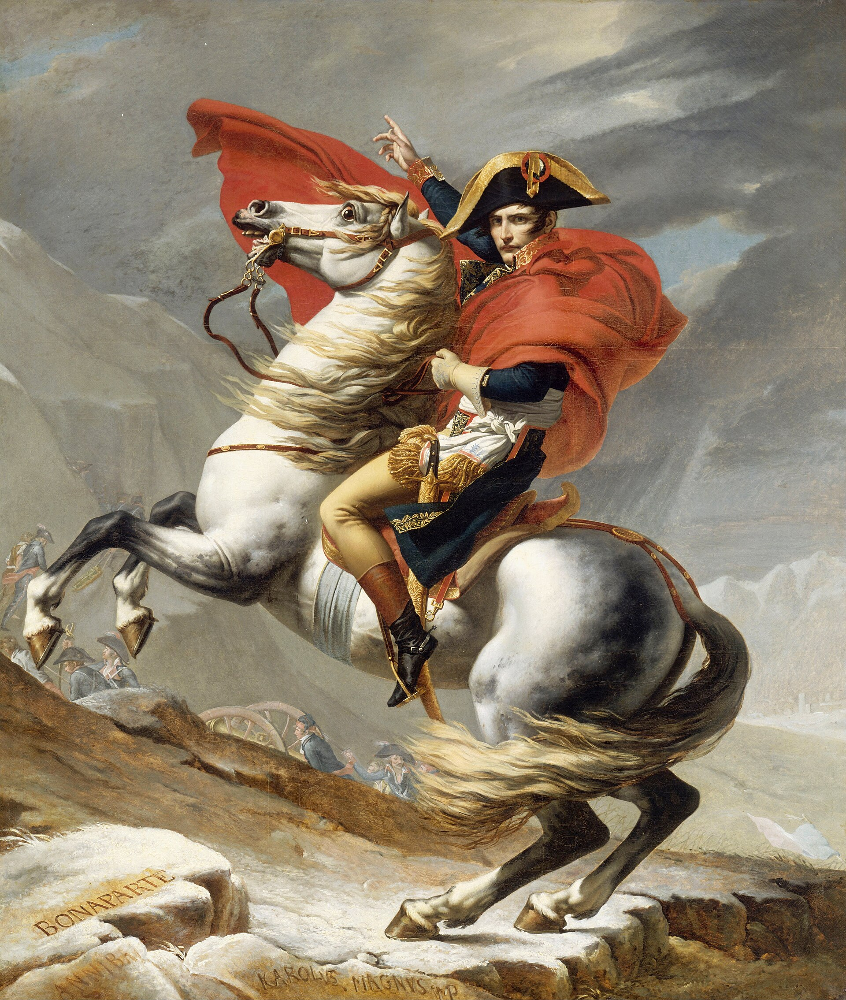

Use external knowledge to identify who the man riding the horse is.

Use external knowledge to identify who the man riding the horse is.

<think>
Hmm, let's see. The question is asking to identify the man riding the horse using external knowledge. Okay, first I need to look at the image. There's a man on a white horse, wearing a military uniform with a bicorne hat that has a gold trim and some insignia. He's holding a red cape that's flowing behind him, and he's raising one hand in a gesture. The horse is rearing up, and there are soldiers and cannon wheels in the background. Also, at the bottom left corner of the painting, there's text that says "BONAPARTE" written on a rock, and below that, part of another inscription: "KAROLVS. MAGNVS IMP".
Wait, but maybe the name on the stone is already a clue. Bonaparte? That rings a bell. Napoleon Bonaparte was a French military leader who became Emperor of France. Oh, right! This painting looks familiar—it might be Jacques-Louis David's famous depiction of Napoleon crossing the Alps. Wait, the painting is titled something like "Napoleon Crossing the Alps," but actually, that's a common subject. But here the inscribed text includes "BONAPARTE." So even though it's a painting by someone else (maybe not David exactly), the figure is Napoleon Bonaparte.
Let me check my knowledge: Napoleon Bonaparte was known for his military campaigns, including the Italian campaign and later the Russian campaign. His iconic portrait often features him on horseback. The uniform—blue coat, red cape, bicorne hat—that matches his military attire during the early years. Also, the scene depicts him leading troops over mountains, which aligns with the legend of his crossing the Alps (though historically, he didn't actually cross the Alps himself; it's a symbolic depiction).
Also, the artist's signature at the bottom—wait, it says "KAROLVS. MAGNVS IMP"—maybe that's a stylized version or a reference. But regardless, the man is identified by the inscription "BONAPARTE" on the rock and historical context. Even if I don't rely solely on the inscription, the visual cues—uniform style, pose, historical significance—point strongly to Napoleon Bonaparte.
I should confirm: Napoleon’s portraits often show him as a commanding general, sometimes with a horse. The bicorne hat with the golden braids and the red cloak are characteristic elements. Plus, the presence of soldiers and artillery in the background fits a military expedition. Given all this, and the explicit inscription of "BONAPARTE," the man must be Napoleon Bonaparte.
So the answer is Napoleon Bonaparte. The question asks to use external knowledge to identify him, so since we know this painting is a depiction of Napoleon (even if the inscription helps confirm), the conclusion is clear.
</think>
<answer>
The image depicts a man on horseback in military attire—including a bicorne hat with gold trim, a blue coat, gold-embroidered uniform details, and a red cloak flowing behind him. The horse is rearing, and the background includes soldiers, cannon wheels, and mountainous terrain. At the bottom left, an inscription reads *“BONAPARTE”* on a snow-covered rock, along with a partially visible artist’s signature (*“KAROLVS. MAGNVS IMP”*). Historically, this artwork aligns with depictions of **Napoleon Bonaparte**, the French military leader and Emperor, often portrayed in grand equestrian scenes symbolizing leadership and conquest. While the inscription directly labels the figure as “Bonaparte,” external knowledge confirms the depiction corresponds to Napoleon Bonaparte, whose iconography (uniform style, pose, and symbolic portrayal as a commanding general) matches the imagery.
\boxed{Napoleon Bonaparte}
</answer>